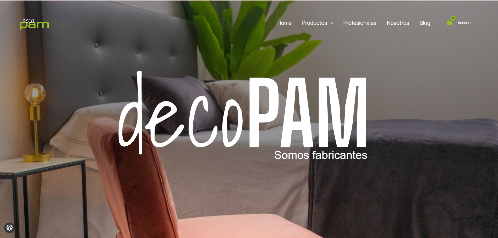
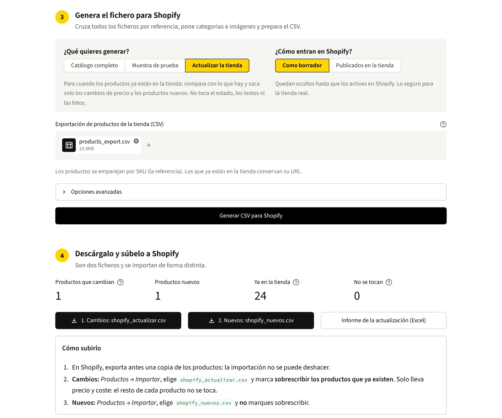
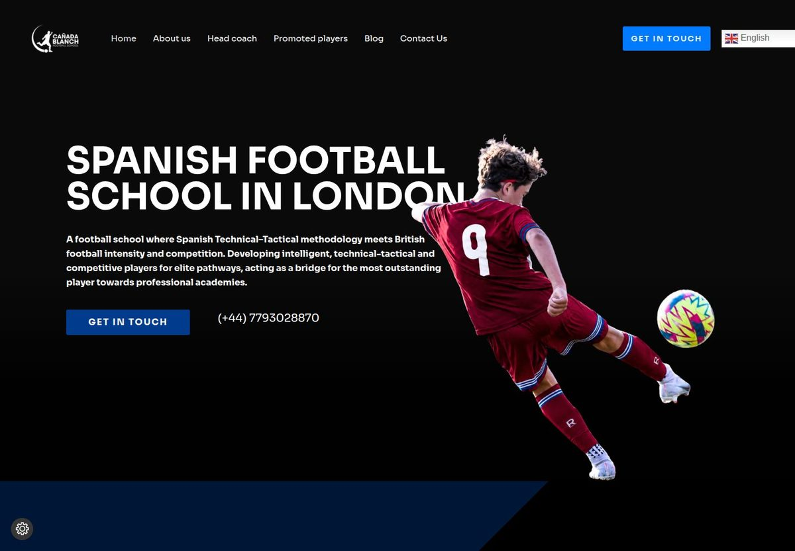
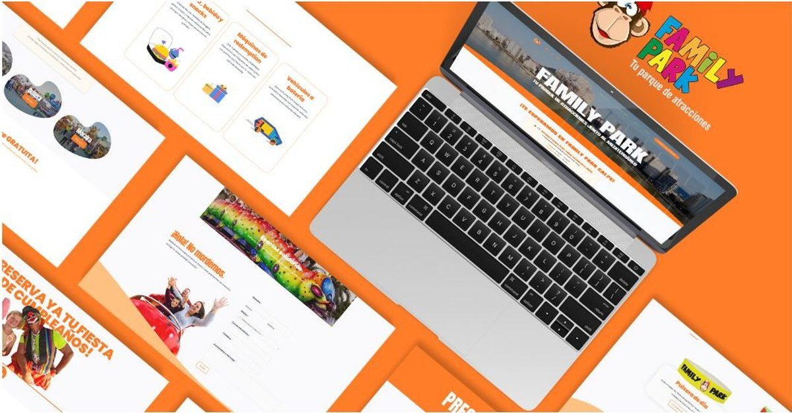
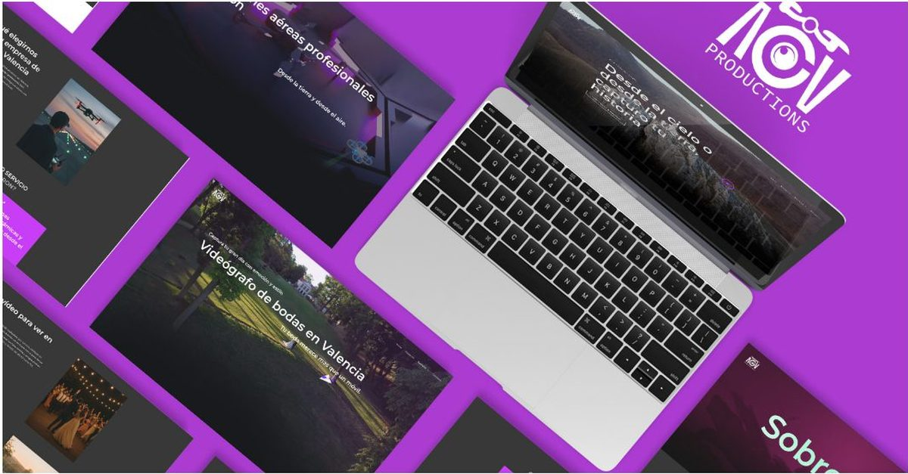
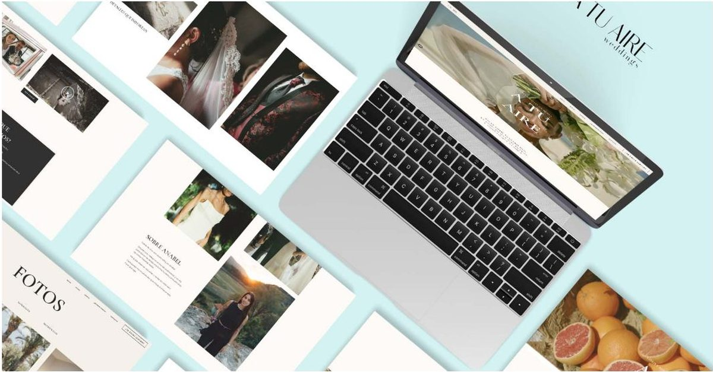

/ Portfolio
See some of
my work
Web platform work end to end: infrastructure, performance, technical SEO and the websites that run on top of it.
Not everything is here. A good part of what I build sits behind NDAs, on client intranets or on staging that never becomes public, so this page shows what I am allowed to show. The rest I can walk through in a conversation.
/ 01 · Infrastructure & Operations
The part nobody sees until it breaks
Client infrastructure does not photograph well, so here it is in words. This is the day-to-day of keeping 15+ live properties running across WordPress, Shopify, Wix and PrestaShop, and it is the work I want more of.
-
Hosting and servers
Shared, VPS and self-hosted, through cPanel, Plesk and SSH. Provisioning, staging environments and deploys.
-
DNS and Cloudflare
Records, propagation, proxying, page rules and SSL end to end. Cutovers planned so the site never goes dark.
-
Migrations
15+ live properties moved between hosts and domains with redirects, hreflang and search equity kept intact.
-
Backups and security
Scheduled backups with restores actually tested, hardening, update discipline and malware cleanup as routine rather than emergency.
-
Performance
Core Web Vitals as continuous work: caching, image pipeline, render path, and no page builder weight where it can be avoided.
-
Monitoring and troubleshooting
Crawl health, redirect chains, canonical and schema errors, tracked with Screaming Frog, Search Console and Ahrefs.
Self-hosted lab: I run a Linux server at home with Docker and Nginx. devilfruittcg.com lives on it, which is why that case study can show the infrastructure decisions in full rather than describe them.
Read the homelab case study →/ 02 · SEO, GEO & AEO
Organic visibility, built as a system
Search is not only Google any more. I work three layers at once: classic SEO, AEO (structuring content so answer engines can quote it) and GEO (earning and measuring visibility inside ChatGPT, Perplexity and AI Overviews). Below is that whole method applied end to end, on a project of my own where every decision is documented.
/ 03 · Web
Websites, end to end
Design and development with premium plugins and multilingual setups, plus everything around it: hosting, DNS, SSL and security, performance and Core Web Vitals, schema markup and on-page SEO. Delivered as one piece.
Note: every site here was built on a staging subdomain and then properly migrated to its final domain, with DNS, SSL and redirects handled so the switch never breaks anything.

DECOPAM
Bedroom decor store migrated from PrestaShop to WordPress and WooCommerce. The migration moved the files but lost the relationship between image, product and variation, so I rebuilt it: a read-only SQL export out of PrestaShop, cross-checked against the WooCommerce catalogue by SKU and by the PrestaShop image ID still embedded in each migrated filename.
- 20products
- 773images cross-checked
- 740matched outright
- 33flagged for review
- 0left unmatched
Then the catalogue itself, from duplicates and categories to variable products rebuilt so size comes before colour. Built at Neurona Digital.
Read the full case study →

Supplier catalogue to Shopify
An engine spare parts shop listed 192 products out of more than a thousand, because every supplier sends its catalogue in a different format and none has an API. Instead of the new website that was asked for, I built a Python tool that reads any supplier file, unifies it, classifies it by engine system and prepares Shopify imports, plus an update mode that never overwrites the live store.
- 192products listed
- 37,948supplier products unified
- 15engine systems
- 0unexplained conflicts
- 37automated tests
Client kept anonymous. Independent project, working on a development store.
Read the full case study →

Football School Cañada Blanch
Full website for a Spanish football academy in London that blends Spanish technical-tactical methodology with British competitiveness. Design, build, content structure and on-page SEO. Built at Neurona Digital.

Family Park
New website for a group of family amusement parks in Calpe, Cullera and Moraira: per-park sections, schedules, pricing, events and seasonal theming. Built at Neurona Digital.

AGV Productions
Website for an audiovisual production company shooting weddings, advertising and corporate content with camera and drone: a portfolio-first site built to bring in new clients. Built at Neurona Digital.

A Tu Aire Studio
Website for a wedding photo and video studio that shoots real moments, no scripts and no posing. A clean portfolio that puts their natural style front and center. Built at Neurona Digital.
About this page: static HTML and CSS, written by hand. No framework, no page builder, one analytics tag. The home page is the React and WebGL one; here it did not need to be, so it is not.
/ Next
Everything connects.
Brand, web and motion are not separate jobs, they are one system. That is how I like to work: depth over volume. If that clicks with what you are building, say hi.